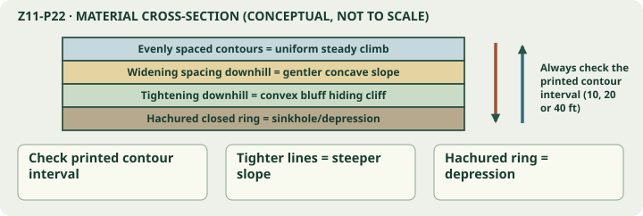

Z11-P22 · Navigation, weather and rescue · New manuscript
Read contour intervals, index contours and slope steepness
Determine elevation gain, cliff hazards and gentle travel grades accurately from brown contour lines.
When it applies · Route planning and terrain verification using standard USGS topographic maps.
Equipment · Topographic map showing contour interval on the bottom margin.

Actions
- Read the map's printed contour interval first (commonly 10, 20 or 40 feet)—every fifth thicker brown line (index contour) displays an elevation number to speed counting.[N02, N03]
- Judge terrain steepness from line density: evenly spaced contours mark a uniform slope, widening spacing downhill marks a gentler concave slope and tightening lines downhill warn of a convex drop-off hiding cliffs below.[N03, N02]
- Look for tiny inward tick marks (hachures) on closed contour rings indicating a sinkhole or depression rather than a hilltop peak.[N03]
Failure recognition · Misreading a 40-foot contour interval as 10 feet and underestimating an exhausting climb by fourfold, or missing a convex cliff lip.[N02, N03]
Verify · Calculate total elevation change across one planned climb using the printed contour interval and identify the steepest slope segment.[N02, N03, ED]
Stop or change course · Treat merged or touching contour lines as sheer cliffs or vertical bluffs—plan a route cleanly around them rather than testing them in person.[N02, N03]
Evidence and editorial notes
- N02 · USGS · Topographic Map Symbols (agency PDF)
- Section: Topographic Map Symbols > Contours, Water, Vegetation and Boundaries · Conditions: Interpreting standard USGS 1:24,000 and US Topo map sheets
Support: Contour spacing indicates slope steepness, index contours give elevation values, blue features mark water/wetlands and standard symbols distinguish roads, trails, cliffs and marshes.
Limitations: Small terrain hazards (boulders, undercut banks, fallen timber, thin ice) fall below map contour interval resolution. · Conflicting evidence: None; anchors terrain and contour interpretation cards.
Editorial note: Explains contour reading alongside map-resolution limitations. · Specialist reviewer: Cartography and search and rescue
Primary source · checked 2026-11-24 - N03 · USGS · What is a Topographic Map (current web edition)
- Section: What is a Topographic Map > Contours and Relief · Conditions: Matching three-dimensional terrain shapes to two-dimensional contour lines
Support: Closed contour rings denote peaks or depressions (hachured), V-patterns point uphill in valleys/drainages and wide spacing marks gentle slopes while tight spacing marks cliffs or steep grades.
Limitations: Dense forest canopy or snow drifts can obscure subtle terrain features shown on the map. · Conflicting evidence: None; core topographic terrain-association evidence.
Editorial note: Supports ridge, valley, saddle and handrail terrain-interpretation cards. · Specialist reviewer: Navigation and cartography
Primary source · checked 2026-11-24
Source lineage · USGS topographic map symbols; new manuscript · Classification · New manuscript.